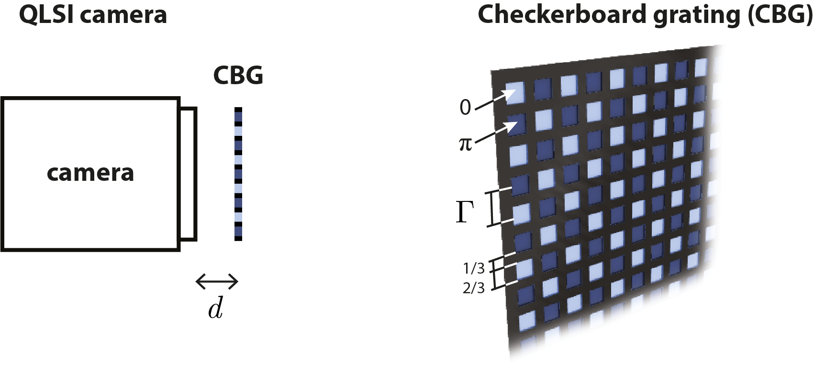
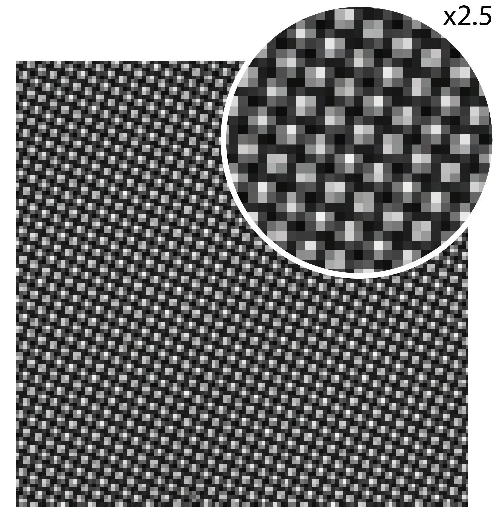
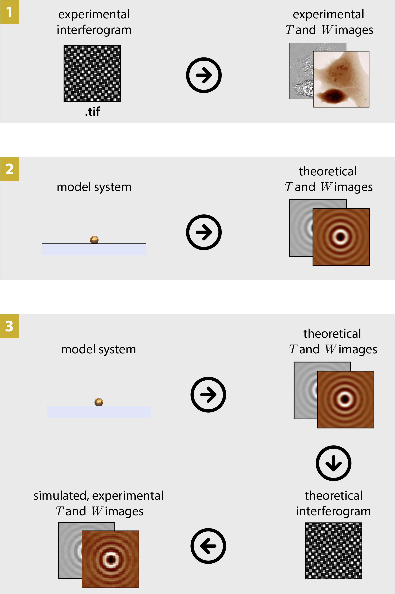

Introduction
What are QLSI and CGM?
QLSI (quadriwave lateral shearing interferometry) is an optical imaging technique capable of mapping both the intensity and the wavefront profile of a light beam.[1] Here are for instance intensity and wavefront images of a Bessel-like beam:

This technique belongs to the quantitative phase imaging (QPI) family, the wavefront \(W\) being simply related to the phase \(\phi\) by the expression \(\phi=\frac{2\pi}{\lambda}W\).
QLSI is based on the the association of a regular camera with a special 2 dimensional diffraction grating, separated with each other by a millimeter distance.
{kind=link}
Such an association gives rise to a modified image of the camera, called an interferogram, featuring an array of tiny bright spots. The intensity and wavefront images are processed from the interferogram image.
{kind=link}
When a QLSI system is implemented in an optical microscope, the measured wavefront becomes the optical path difference (OPD) created by the micrometric object placed at the sample plane. This configuration is usually referred as cross-grating wavefront microscopy (CGM).
The PhaseLAB Matlab toolbox is aimed to deal with QLSI images. It enables the processing of the interferogram into intensity and wavefront images, but also the simulations of interferograms, intensity, wavefront and OPD images from model objects, such as nanoparticles.
The 3 main functionalities of PhaseLAB
PhaseLAB can be used for 3 main purposes:
Convert experimental QLSI interferogram images into images of interest, namely, wavefront, intensity, wavefront gradients, etc. Process and do measurements on these images using code lines, or using a GUI interface (crop, plot crosscuts, filter, flatten, numerically refocus, measure dry masses, export, make movie, etc).
In silico QLSI, that is simulate QLSI intensity and wavefront/phase images of nanoparticles acquired with a specific microscope.
From the In silico QLSI simulation, compute the theoretical interferogram recorded by the camera in the presence of the QLSI grating, and process it as if it were an experimental interferogram.
The 3 functionalities are sketched below:
{kind=link}
This Matlab toolbox uses OOP
Instead of using functions with an arbitrary large number of input parameters, which can be quite cumbersome, the PhaseLAB Matlab toolbox leverages on the elegance of object oriented programming (OOP). Basically, instead of using a function that needs all the parameters of the microscope (magnification, numerical aperture, wavelength, etc)
output = fun(M, NA, lambda);
one simply defines a variable (an object), MI, that gathers all these properties. They can be accessed by writing MI.M, MI.NA, MI.lambda. This way, the function only requires a single input parameter, favoring a good readibility of the code
output = fun(MI);
Basic examples of PhaseLAB codes
Here are some simple code examples belonging to the three categories listed above. More examples can be found in the Code examples section.
Import experimental images
Import experimental images
Code to import an experimental interferogram, process it, and display the QLSI images
%% code to import an experimental interferogram, process it, and display the QLSI images
MI=Microscope(OB,180,'Silios_mono');% Create the Microscope object
IL = Illumination(532e-9); % Create the Illumination object
Itf = imread('data/Itf.tif'); % Import the main interferogram
Ref = imread('data/Ref.tif'); % Import the reference interferogram
Im = Interfero(Itf,MI); % Make the interferogram object
Im0 = Interfero(Ref,MI); % Make the reference interferogram object
Im.Reference(Im0); % Assign the reference to the interferogram
IM = QLSIprocess(Im,IL); % Process the QLSI images
IM.figure; % Display the QLSI images
Auto import experimental images
Automatically import experimental images
Code to automatically import experimental interferograms
%% code to import an experimental interferogram, process it, and display the QLSI images
MI=Microscope(OB,180,'Silios_mono','PhaseLIVE'); % Create the Microscope object, and tell the imaging software
IL = Illumination(532e-9); % Create the Illumination object
Itf = imread('data/Itf.tif'); % Import the main interferogram
Ref = imread('data/Ref.tif'); % Import the reference interferogram
Im = importItfRef('data', MI); % Import the interferogram and their references
% The code knows how to import the images, because the imaging software was indicated (here 'PhaseLive').
Image simulation
Image simulation
Code that simulates the image of a gold nanoparticle
%% code that simulates the image of a gold nanoparticle
lambda = 530e-9; % Illumination wavelength
Npx = 300; % Final image with Npx*Npx pixels
n = 1.33; % Refractive index of the surrounding medium
ME = Medium(n);
OB = Objective(200,1.3,'Olympus');
CGcam = CGcamera('Silios_mono');
MI = Microscope(OB,180,CGcam);
IL = Illumination(lambda,ME);
radius = 50e-9; % Nanoparticle radius
DI = Dipole('Au',radius);
DI = DI.shine(IL);
IM0 = imaging(DI,IL,MI,Npx);
IM0.figure
Image postprocessing
Image postprocessing
Examples of QLSI images postprocessing
%% code that performs successive image processings
% crop of the image
IM0.crop('Size', 300, 'Center', 'Manual')
% flattening of the background
IM0.flatten(3)
% numerical refocusing by 0.5 µm
IM0.propagation(0.5e-6)
% flip the image upside down
IM0.flipud()
% high-pass filter
IM0.highPassFilter(20)
%image diplay
dynamicFigure('ph',IM0,'bw',{IM0.T})
Make a movie
Making a movie
Animating the image of nanoparticles as a function of the focus.
%% code that animates the image of a ring of nanoparticles
clear
lambda = 530e-9; % Illumination wavelength
Npx = 1200; % Final image with Npx*Npx pixels
n = 1.33; % Refractive index of the surrounding medium
ME = Medium(n);
OB = Objective(100,1.3,'Olympus');
CGcam = CGcamera('Silios_mono');
MI = Microscope(OB,180,CGcam);
IL = Illumination(lambda,ME,1,[1 1i]); % circularly polarized illumination
radius = 50e-9; % Nanoparticle radius
DI0 = Dipole('Au',radius);
DI = repmat(DI0,12,1);
R=3e-6; % radius of the ring
for ii=1:12
DI(ii)=DI(ii).moveTo('x',R*cos(2*pi*ii/12),'y',R*sin(2*pi*ii/12));
end
DI = DI.shine(IL);
Nf = 21; % number of nanoparticles over the ring
focus = linspace(-2,2,Nf)*1e-6; % various focus distances
IM = ImageEM(Nf);
for iz = 1:Nf % positioning of the Nf nanoparticles
MI.zo = focus(iz);
IM(iz) = imaging(DI,IL,MI,Npx);
end
IM.crop(Size=300);
IM.makeMoviedx('IM.avi','theta',0,'phi',0,'rate',2,'zrange',[-10 10])